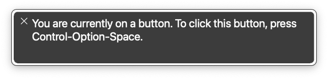

Accessibility Demo
This entire demo page is, for the most part, pure HTML. All of the content uses appropriate semantic tags to my best ability, and all of the widgets are using native elements, unless stated otherwise.
My goal is to show how powerful—and accessible—using HTML elements can be.
Using your Screen Reader
To get the full experience from this demo, you will likely need to know how to use a screen reader. For our purposes we will be using VoiceOver, which is the included screen reader for macOS.
To open VoiceOver, press Command + F5.

You will now see the VoiceOver overlay, which will begin reading your current focused content.
VoiceOver commands use a special VO key, which by default is:
- Control + Option
- Caps Lock
A full list of controls are avaliable on Apple's website, but only a few will be necessary for this demo.
- VO + Arrow Keys moves your focus to the next immediate element in that direction.
- VO + Shift + ( ← / → ) moves your focus to the next element in the same depth.
- VO + Shift + ( ↑ / ↓ ) moves your focus up or down a level of depth.
-
VO + U opens the Rotor, allowing you to navigate to key elements.
- By default, this shows links, but you can use ← / → to view page headers, etc.
If you have not already, turn on VoiceOver before proceeding with the rest of the demo. Take note of how it interacts with not just the widgets, but the standard page content as well. Sound is not necessary, but may help you understand how real users interact with this system.
Native Widgets
One of the main benefits to utilizing native HTML widgets is the inherent navigation support.
When making your own bespoke widgets using JavaScript, such as a dialog box or a calendar picker, you have to implement all of the alternate input handling yourself: i.e. handling arrow keys incrementing an input, or tabbing through the current year.
With just HTML, however, you can have functional, accessible interfaces without having to do any work.
Most mainstream browsers have robust support for native HTML widgets such as these. While they may not be the prettiest, they are incredibly functional. And sometimes, that is all you need.
Other Widgets
These are just some native widgets that satisfy common needs for web developers.
Notice how all of these widgets were fully navigable and accessible, no matter if you were using your keyboard, your mouse, or even your phone. By using them you don't have to worry whether or not you missed a necessary accessibility feature, because it's all already handled.
ARIA Interactions
ARIA is a set of roles and attributes that interacts with assistive technologies to provide more context to the user. ARIA can label certain sections of an article, manage interactions with site widgets, help users fill out forms, etc.
In most native HTML widgets (such as the ones you just saw) ARIA roles are implicit and handled by the browser.
For example, the <dialog> widget has a native ARIA role of "dialog", which tells accessibility tools how to properly interact with it.
Apart from roles, ARIA also relies on attributes that communicate the current state of the element.
The detail dropdown doesn't have a unique role for being a dropdown.
Rather, it has a summary element with an implicit "button" role, which signals that it is interactable.
The parent details element also implicitly uses aria-expanded, which is an attribute that tells accessibility tools whether or not an expandable element is open.
Setting your own roles and attributes
But what if I can't use an HTML widget?
Worry not! You can configure ARIA for your own custom widgets! But before you do so, be careful; misconfigured ARIA can make the experience worse for users than just having done nothing.
The
Mozilla Web Docs
(MDN) have more information about what roles to use when, but the majority of ARIA roles are intended to be used by native HTML widgets.
For example, if you need a button, don't make a div with role "button"; just use a button element.
Example: Tabs
However, using ARIA is wonderful for more complex widget types that HTML does not implement. For this example I will use a very common tab-panel widget, which separates content into active tabs.
Try navigating through the content with just your keyboard and the text from the screen reader. While focusing the tab-list, ← / → will allow you to focus different tab triggers, and Enter / Space will select that tab.
Code from MDN Tab ExampleHow to run this application on Windows
How to run this application on macOS
How to run this application on Linux
Notice how your screen reader is fully aware of the tabs that are in this widget, what is selected, etc. This is thanks to this widget's extensive (and proper) use of ARIA roles and attributes.
Roles
- Each tab button is contained in an element with the role
"tablist", and those buttons each have the role,"tab". -
The content is stored in a sibling element, which contains three elements of role
"tabpanel", each reflecting a specific tab's content. Per the role specification, only one panel is visible at a time.
Attributes
- A tab is tied to its tab-panel using the
aria-controlsattribute, and the tab-panel is described by its tab's label usingaria-labelledby. -
A tab's selection state is controlled using
aria-selected, which gets toggled by JavaScript based on the active tab.
Something of note: just adding the ARIA roles and attributes does not make a widget accessible. While important, ARIA is mainly there to communicate what the widget is to the screen reader in a standardized way. You must also write the code that implements the role's navigation specs, and sets the attributes.
But why do any of this?
All of this sounds like a lot of extra work, and you may find yourself asking, why is any of this important for me to do? Most people reading this probably navigate the web using a mouse, and likely have full-enough vision to read content.
Beyond being legally required if you are developing for a publically-funded organization, making your interfaces accessible benefits the one billion people globally who are impacted by a disability. The userbase that can benefit from robust interfaces is not one to be scoffed at, and servicing them opens your application up to so many more people.
Imagine that you are responsible for something like a petition platform, something that can carry real impact in the world. If there exists an entire subsection of users that cannot interact with your platform, then that is a large population whose voices do not get to be heard.
While a narrow example, that reasoning can follow to any site, any part of the internet that can tangibly benefit from the inclusion of all users. It is our responsibility as developers and designers to sculpt an internet that fosters a community for everyone.